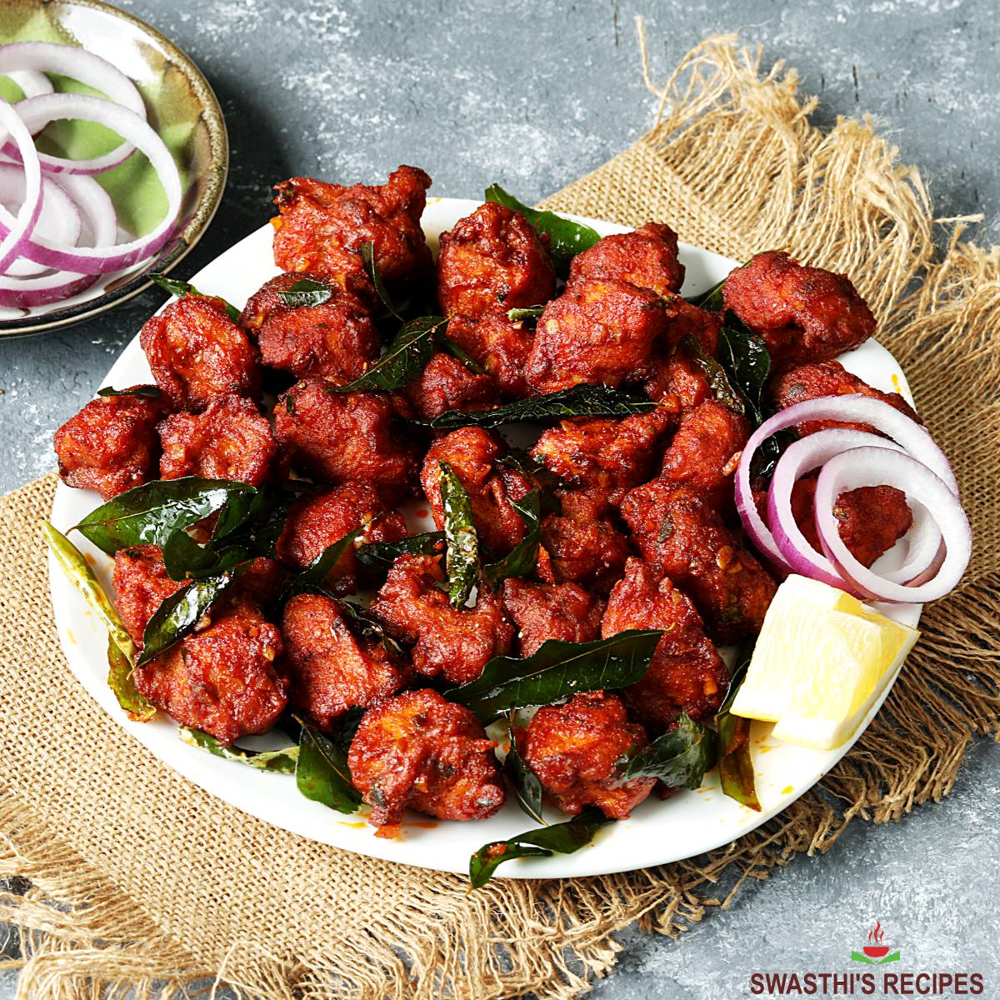

Chicken 65 is a spicy, deep-fried chicken dish originating from Hotel Buhari, Chennai, India, as an entrée, or quick snack. The flavour of the dish can be attributed to red chillies, but the exact set of ingredients for the recipe can vary. It is prepared using boneless chicken and is usually served with an onion and lemon garnish
Home Page